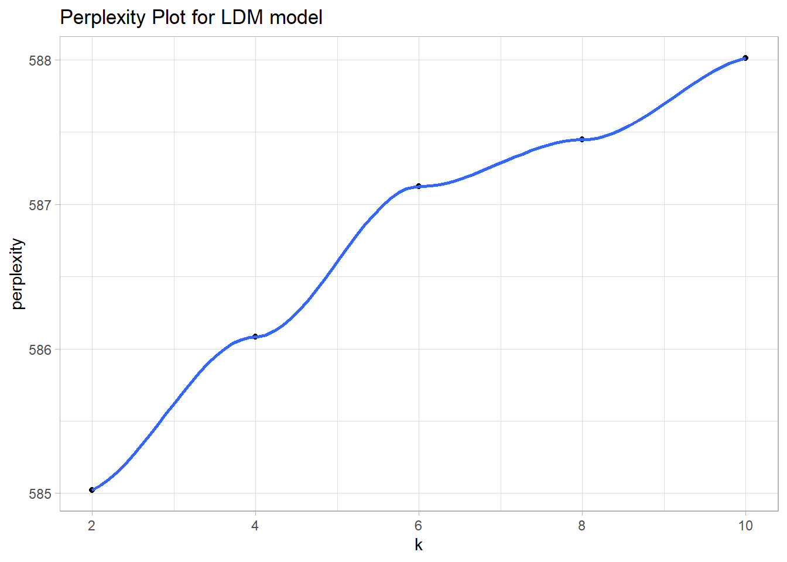

2.2 LDA
Latent Dirichlet allocation (LDA) is one of a family of mixed membership models that decompose data into latent components. Latent means unidentified topics and Dirichlet is the distribution followed by the words in topics and by topics in documents.
LDA presumes each document is created by a generative process in which topics are selected from a probability distribution and then words from that topic are selected from another distribution. LDA optimizes the distributions by performing a random search through the parameter space to find the model with the largest log-likelihood. There are multiple search algorithms, but the preferred one appears to be Gibbs sampling, a type of Monte Carlo Markov Chain (MCMC) algorithm. The algorithm is:
For each document \(d = 1 \ldots D\), randomly assign each word \(w = 1 \ldots W\) to one of \(k = 1\ldots K\) topics.
Tabulate the number of words in each document and topic, a \(D \times K\) matrix, and tabulate the number of occurrences of each word in each document, a \(W \times D\) matrix.
Resample to remove a single instance of a word from the corpus, decrementing the document’s topic count and the word’s topic count.
Calculate the gamma matrix and the beta matrix.
- the gamma matrix (aka theta) is the topical prevalence, the probability distribution of topics for each document, \[p(k|d) = \frac{n_{dk} + \alpha}{N_d + K \alpha}\] were \(n_{dk}\) is the number of words in document \(d\) for topic \(k\), \(N_d\) is the total number of words in \(d\), and \(\alpha\) is a hyperparameter. For each \(d\), \(\sum_{k \in K} \gamma_{dk} = 1\).
- the beta matrix (aka phi), is the topical content, the probability distribution of words for each topic, \[p(w|k) = \frac{m_{w,k} + \beta}{\sum_{w \in W}m_{d,k} + W\beta}\] where \(m_{w,k}\) is the corpus-wide frequency count of word \(w\) to topic \(k\), \(W\) is the number of distinct words in the corpus, and \(\beta\) is a hyperparameter. For each \(k\), \(\sum_{w \in W} \beta_{kw} = 1\).
Calculate the joint probability distribution of words for each document and topic, \(p(w|k,d) = p(k|d)p(w|k)\). Assign each word, \(w\), to the topic with the maximum joint probability.
Repeat steps 3-6 for all of the words in all of the documents.
Repeat steps 3-7 for a pre-determined number of iterations.
LDA thus has 3 hyperparameters: the document-topic density factor, \(\alpha\), the topic-word density factor, \(\beta\), and the topic count, \(K\). \(\alpha\) controls the number of topics expected per document (large \(\alpha\) = more topics). \(\beta\) controls the distribution of words per topic (large \(\beta\) = more words). Ideally, you want a few topics per document and a few words per topic, so \(\alpha\) and \(\beta\) are typically set below one. \(K\) is set using a combination of domain knowledge, coherence, and exclusivity.
Notice that LDA is a “bag of words” method. It does not consider the order of the tokens in the text, so where tokens are located what other tokens are nearby do not factor into the output.
Fit
Fit the LDA model with topicmodels::LDA(). It uses the tm DocumentTermMatrix data class, the same as what you just created in the pre-processing step.
There are several parameters you might tweak for the model fit. The biggest surprise is that you set the number of topics, k. In general, you only want as many topics as are clearly distinct and that you can easily communicate to others. Nagelkerke (2020) suggests sticking with the art vs science approach and picking your own k. A common recommendation is the perplexity statistic. Perplexity is a measure of how well a probability model fits a new set of data. As the number of topics increase, the perplexity will generally decrease. That is not the case below.
set.seed(12345)
train_ind <- sample(nrow(hotel_dtm), floor(0.75*nrow(hotel_dtm)))
k_train <- hotel_dtm[train_ind, ]
k_test <- hotel_dtm[-train_ind, ]
k = c(seq(from = 2, to = 10, by = 2))
perp <- k %>%
map(~ LDA(k_train, k = .x)) %>%
map(~ perplexity(.x, newdata = k_test, control = list(estimate.beta = FALSE))) %>%
as.numeric()
data.frame(k = k, perplexity = perp) %>%
ggplot(aes(x = k, y = perplexity)) +
geom_point() +
geom_smooth(method = "loess", se = FALSE, formula = "y~x") +
labs(title = "Perplexity Plot for LDM model")
I will stick with a simple k = 4 model, mostly for convenience since this is just an example.
The fitted object contains two matrices. The beta (aka “phi”) matrix is the distribution of tokens (cols) over topics (rows). The gamma (aka “theta”) matrix is the distribution of documents (rows) over topics (cols). The row sum is 1 for each matrix (sum of topic probabilities for beta, sum of document probabilities for gamma).
lda_beta_mtrx <- posterior(lda_fit) %>% pluck("terms") %>% as.matrix()
# One row per topic, one col per word.
dim(lda_beta_mtrx)
## [1] 4 1211
# Word probability distribution sums to 1 for each topic.
sum(lda_beta_mtrx[1, ])
## [1] 1
lda_gamma_mtrx <- posterior(lda_fit) %>% pluck("topics") %>% as.matrix()
# One row per document, one col per topic
dim(lda_gamma_mtrx)
## [1] 729 4
# Topic probability distribution sums to 1 for each document.
sum(lda_gamma_mtrx[1, ])
## [1] 1tidytext::tidy() pivots the beta matrix into a [topic, term, beta] data frame.
lda_beta_tidy <- tidy(lda_fit, matrix = "beta")
lda_top_tokens <-
lda_beta_tidy %>%
mutate(topic = factor(paste("Topic", topic))) %>%
group_by(topic) %>%
slice_max(order_by = beta, n = 10) %>%
ungroup()
lda_top_tokens %>%
ggplot(aes(x = beta, y = reorder_within(term, by = beta, within = topic))) +
geom_col() +
scale_y_reordered() +
facet_wrap(facets = vars(topic), scales = "free_y") +
labs(y = NULL, title = "LDA Top 10 Terms")
Word clouds tell you more or less the same thing. Here is the code below. I think everyone has pretty much moved past word clouds, so I’m not even wasting space on this.
colors6 <- RColorBrewer::brewer.pal(n = 4, name = "Set2")
x <- map(
c(1:4),
~ with(lda_beta_tidy %>% filter(topic == .x),
wordcloud::wordcloud(
term,
beta,
max.words = 20,
colors = colors6[.x]
))
)There is a downside to this evaluation. Popular words like “room” appear at or near the top in multiple topics. You might want to look at relative popularity instead: the popularity within the topic divided by overall popularity. That’s problematic too because words that only appear in few reviews will pop to the top. What you want is a combination of both absolute term probability and relative term probability. LDAvis::serVis() can help you do that.
Unfortunately, the plot from LDAvis::serVis() is interactive and does not render in the RMarkdown notebook html, so below is just a screenshot of the code chunk output.
The left side shows the topic sizes (documents) and topic distances. The right side shows the most important tokens.
# word count for each document
doc_length <- hotel_word_stats %>% filter(corp_freq > 5) %>%
summarize(.by = review_id, n = sum(doc_freq)) %>% pull(n)
# vocabulary: unique tokens
vocab <- colnames(lda_beta_mtrx)
# overall token frequency
term_frequency <- hotel_word_stats %>% filter(corp_freq > 5) %>%
summarize(.by = word, n = sum(doc_freq)) %>% arrange(match(word, vocab)) %>% pull(n)
# create JSON containing all needed elements
json <- LDAvis::createJSON(lda_beta_mtrx, lda_gamma_mtrx, doc_length, vocab, term_frequency)
LDAvis::serVis(json)
The gamma matrix shows topic distributions. Use it to see if topics vary by a covariate. The topics did not vary by rating
tidy(lda_fit, matrix = "gamma") %>%
mutate(document = as.numeric(document), topic = factor(topic)) %>%
inner_join(prepped_hotel, by = join_by(document == review_id)) %>%
summarize(.by = c(rating, topic), gamma = mean(gamma)) %>%
ggplot(aes(x = gamma, y = fct_rev(rating), fill = topic)) +
geom_col() +
labs(y = NULL, title = "LDA Topic Distribution")Iterate through the model by tweaking k, excluding words that suppress interesting subdomains, and/or changing the minimal token frequency to focus on more/less dominant tokens. You can also change the document sampling strategy to promote interesting domains, like we did when we over sampled the low hotel ratings.
Topic Labeling with ChatGPT
An API token is required for OpenAI’s ChatGPT API service. I created one at https://platform.openai.com/api-keys and saved it to .Renviron. See usethis::edit_r_environ().
# Create a function to send each list of topic words to Open AI as a separate request.
get_topic_from_openai <- function(prompt) {
my_resp <-
request("https://api.openai.com/v1/chat/completions") %>%
req_headers(Authorization = paste("Bearer", Sys.getenv("OPENAI_API_KEY"))) %>%
req_body_json(list(
model = "gpt-3.5-turbo",
# Temperature [0,2] controls creativity, predictable -> variable.
temperature = 1,
messages = list(
# System prompt sets repeated context. It is prefixed to prompts.
list(
role = "system",
content = paste("You are a topic modeling assistant. You accept lists ",
"of words in a topic and summarizes them into a salient ",
"topic label of five words or less. How would you ",
"summarize the following list? The list is in descending ",
"order of importance, so the first term in the list is most ",
"strongly tied to the topic. Return just the topic label and ",
"nothing else.")
),
list(
role = "user",
content = prompt
)
)
)) %>%
req_perform() %>%
resp_body_json() %>%
pluck("choices", 1, "message", "content")
}
lda_topics <-
lda_top_tokens %>%
nest(data = term, .by = topic) %>%
mutate(
token_str = map(data, ~paste(.$term, collapse = ", ")),
topic_lbl = map_chr(token_str, get_topic_from_openai),
topic_lbl = str_remove_all(topic_lbl, '\\"'),
topic_lbl = snakecase::to_any_case(topic_lbl, "title")
) %>%
select(-data)
# Save to file system to avoid regenerating.
saveRDS(lda_topics, file = "input/lda_topics.RDS")Let’s see the topic summary with the newly generated labels.
lda_top_tokens %>%
inner_join(lda_topics, by = join_by(topic)) %>%
mutate(topic_lbl = str_wrap(topic_lbl, 25)) %>%
ggplot(aes(x = beta, y = reorder_within(term, by = beta, within = topic_lbl))) +
geom_col() +
scale_y_reordered() +
facet_wrap(facets = vars(topic_lbl), scales = "free_y") +
labs(y = NULL, title = "LDA Top 10 Terms")
2.2.1 Discussion
LDA has some restrictive assumptions to be aware of.
The distribution of topics is estimated independently of the documents. If the corpus was about vacation resorts, weather would an important topic in warm equatorial zones where sunny weather was the main selling point. Museums might be more important in historical European cities.
The distribution of words in a topic is estimated independently of the documents. Two documents could be about the topic “violence during protests”, but use different language based on viewpoint “peaceful protesters and brutal police” vs “rioters and law and order”. It’s the same topic, but the content differs.
TODO
I still need to learn more about
- Held-out Likelihood (Wallach et al., 2009).
- Semantic Coherence. The coherence measure evaluates topics.
- Exclusivity. Generally, the greater the number of topics in a model, the lower the quality of the smallest topics. One way around this is hiding the low-quality topics.